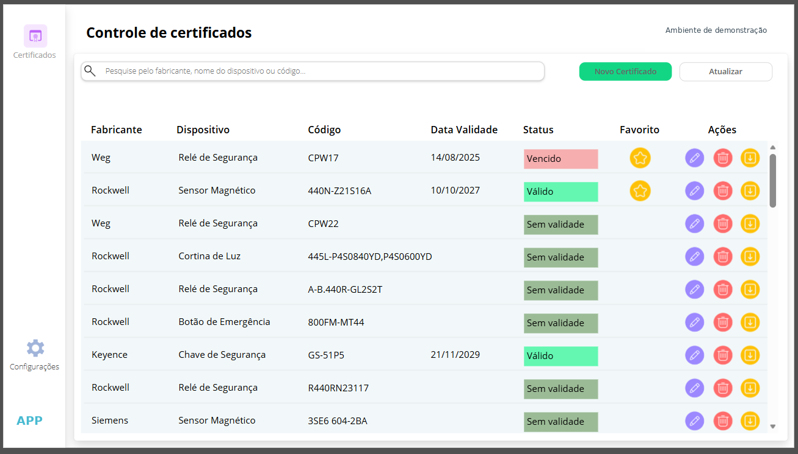

PROJETO PROFISSIONAL · POWER APPS
Controle de Certificados de Segurança
Aplicação para consulta e acompanhamento de certificados de dispositivos de segurança, organizando fabricante, modelo e status de validade.
Power Apps CanvasDocumentação técnicaGestão de validadeNR-12

DESAFIO
O problema
A verificação de certificados de dispositivos de segurança exige localizar documentos e identificar rapidamente situações de validade e ausência de vencimento informado.
SOLUÇÃO
O que desenvolvi
Desenvolvi uma tela de consulta com pesquisa e sinalização visual de validade, permitindo organização e manutenção dos registros.
EVIDÊNCIAS
Funcionalidades
- Busca por fabricante, dispositivo ou código.
- Sinalização de registros válidos, vencidos e sem validade.
- Acesso a cadastro e atualização de certificados.
- Ações de edição e organização dos registros.
Os códigos de dispositivos e fabricantes exibidos na imagem devem ser avaliados antes de qualquer publicação externa.